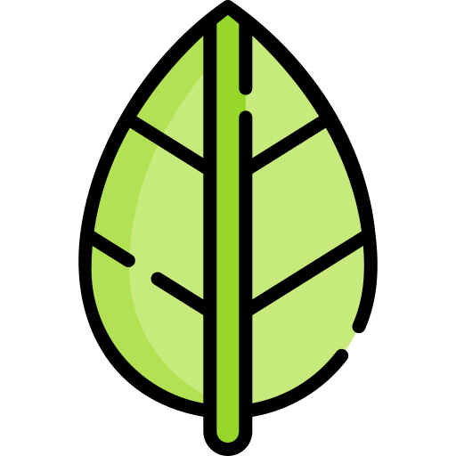

MACHINE IMAGINE
Para Diseñadores
Para Desarrolladores
Contactame
Ciencia
Ciencia al servicio del arte
Arte
Arte al servicio de la ciencia
¿Por donde empiezo?
Busca temas que te interesen a continuación
Todos
Programacion
Arte